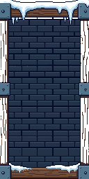
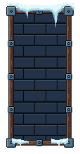
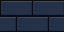
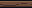
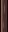
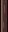
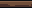

Raw generated source · 128×256

Original PNGRattlebones and three Frostwake enemies. Only the portrait decoration changes between each pair. Existing board and lower HUD art remain until their own stages.
Fit-to-window view. Open an image for its full capture.
Raw PixelLab source → cleaned modular portrait. These are asset views; the panel mock assembly is not a gameplay screenshot. Every enlarged asset uses nearest-neighbor display.

Original PNG
4× inspection view15 modules · 12 opaque colors
Binary transparency
Opaque timber and tiled masonry
Exact LibreSprite reopen/export match
One PixelLab call: 10 generations
Balance: 4,940 generations
64×32 · 4 colors

12×12 · 4 colors
LibreSprite source16×16 · 4 colors
LibreSprite source16×16 · 4 colors

16×16 · 4 colors

16×16 · 4 colors

32×8 · 4 colors

8×32 · 4 colors

8×32 · 4 colors

32×8 · 4 colors

32×36 · 3 colors
LibreSprite source32×16 · 3 colors
LibreSprite source32×36 · 3 colors
LibreSprite source24×14 · 2 colors
LibreSprite source24×14 · 3 colors
LibreSprite sourceUnity compilation passed. Five portrait viewport checks passed, including inset safe area, clipping, centered clamps and unchanged shared geometry. Existing native frames also passed across five zones × three sizes. Negative probes reject incorrect corner scale and tiled density.
Unity Editor evidence only; no Android build or phone test in this stage. The existing 360×640 camera warning and crowded labels remain visible in both versions.
Handoff notes · Native QA · Unity checks · Preservation hashes · Screen differences